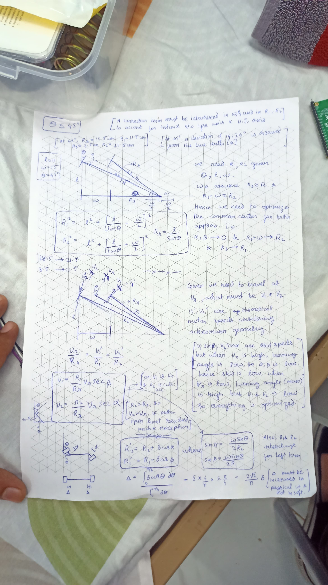
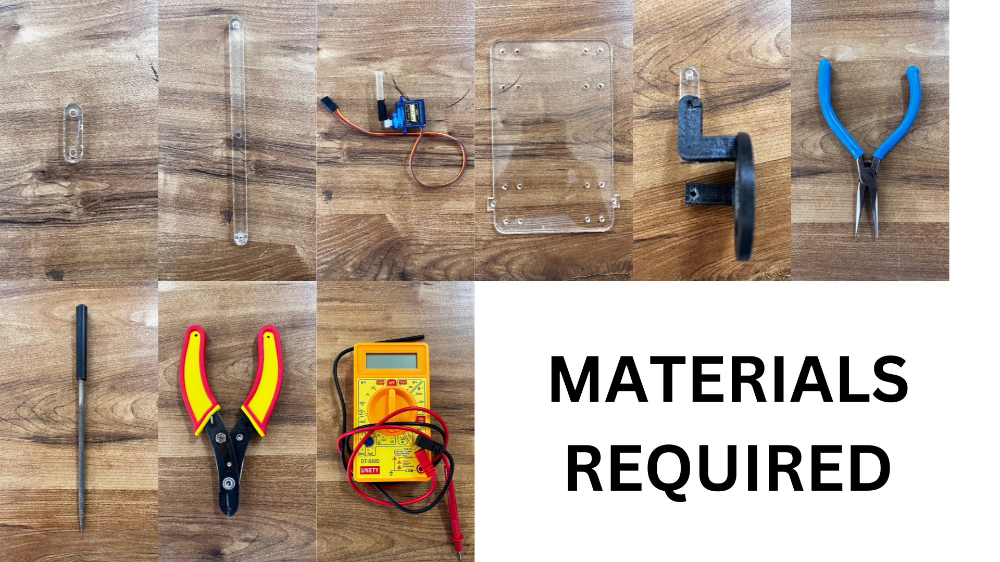
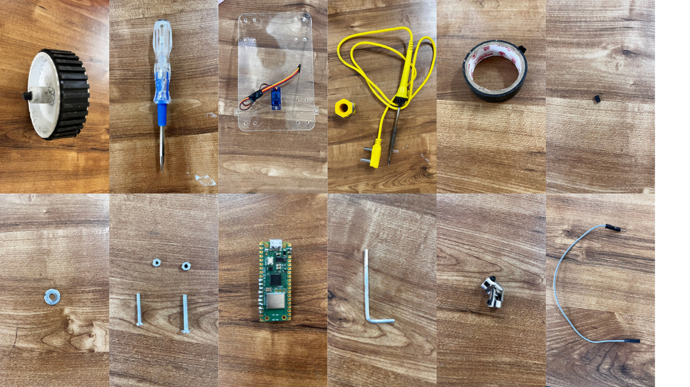
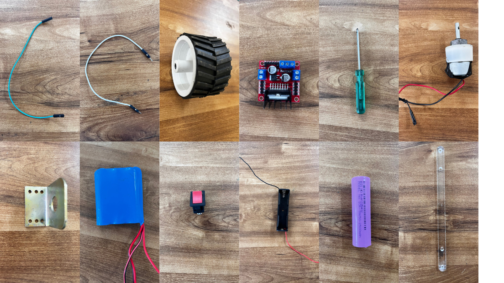

Levitas | An XLR8 Project
levitas
/ˈle.wi.taːs/
noun
Lightness; frivolity; inconstancy; fickleness.
"Propter levitatem et gloriae cupiditatem." - For the sake of
fickleness and desire for glory.
This is about how we made a WiFi-based RC car that is controlled by an app (designed by us 🫰), has a four-wheel drive employing the axle mechanism at lesser angles (<45°) and switching to differential steering after that (harder than we initially thought)
And all of that in two weeks, just in time for midsems 💪
Unique Features
...what makes us different from the rest of the '4-wheel-drive charlies'...- Four wheel drive along with a servo based axle mechanism
- A hybrid steering mechanism that uses both differential and axle steering methods
- Allows a huge variation of turning radii at various speeds
- Custom code for the steering allows controlled turning at all speeds
- Uses universal joints to maximize total torque of all four motors along with axle steering
- Uses a custom mobile app for implementing joystick-like control
- Provides granular and responsive control for the driver
How It Works
Our RC Car uses a Raspberry Pi Pico W as its brain, controlling high-torque motors and processing signals sent from a controller mobile app, in real time.
- The app provides a simple joystick interface thanks to the virtual-joystick-android library.
- The Raspberry Pi Pico W connects to the app via a static IP and port using either an external WiFi network, or with the Pico's onboard module as a soft access point.
- We send JSON packets over the WiFi network that encode the desired angle and speed to move the bot at.
- The code on the Pico then processes these instructions, and using some crazy math  ... converts to signal-based instructions.
- The signals are then sent to the motor driver and servo to steer the car in the desired direction.
- A skilled driver then uses said tools to outplay and outskill the competition 😎
{kind=link}
Source Code
Consists of two sections, the controller app and the raspberry pi code
-
ControllerTest
This is the source code for the custom controller app that provides a joystick interface using the virtual-joystick-android library, built using Android Studio. -
levitas
This is the source code for the microcontroller that parses the instructions sent from the app, converts it into signal-based instructions that are then transmitted to relevant electronic components.
It is written specifically for this bot (not taken from the XLR8 tutorial), to work with the hybrid steering mechanism at maximum possible torque and efficiency. It was written in Arduino IDE with the libraries and compilation arguments provided by the XLR8 team, additionally, the ArduinoJson library is used to parse the JSON messages.
Behind the Scenes
Disclaimer!
Lots of melodrama ahead, skip to the tutorial if you ainʼt jobless 😴.
or if it is the eve of the final XLR8 run...
or if it is the eve of the final XLR8 run...
Tutorial
...work in progress... will keep updating it as we figure it out ourselves...Steps to follow in order to replicate our success:
- Additional help resources are to the right 👉
-
Materials required (from top left):
First  rim support, steering rack, sg90 towerpro servo motor, chassis, rim, plier, 3d print filer, wire cutter, multimeter Second  tyre 7x2 cm two pieces, screwdriver (-), servo_fitted_chassis, soldering gun and wire, insulating tape, allen key (3mm and 2.5mm 5 nos. each), washer x1, screws and nuts (3mm and 2.5mm 10 each), rpi pico 2 w, allen key, universal joint x2, male to female jumpers Third  female to female jumpers, male to male jumpers, tyres 7x4 2 pieces, screwdriver (+), motors (300rpm x4), l clamps x4, li ion battery, switch, battery holder, 3.3v battery, main support for rims -
Mechanical Design Files
-
Tutorial Video 1
{kind=link}
{kind=link}
{kind=link}
The Final Run
Failures
Success
The Team
-
Narendra AironiTeam MaestroSpecialized in RC car mechanics and performance tuning. Responsible for overall managing and delegating of tasks, and evaluating the maths required for the hybrid steering.
-
Sushant PadhaSoftware SageFocused on RC car control system and joystick user interface design. Responsible for writing code for the controller app, and code for the raspberry pi and interfacing them together with minimal latency and fine control.
-
Vallabh PardeshiMechanical MavenFocused on cutting the chassis and mechanical aspects of RC car design. Responsible for sourcing and fitting universal joints, creating the bar-based axle steering mechanism and modelling and 3D printing the wheel rim and ensuring they all fit in for well enough stability along with strength to overcome hard impacts.
-
Shivansh .Electronics WizardFocused on the electronic components and interfacing them with each other reliably. Responsible for soldering the microcontroller and connecting with the motor drivers, power supply and those further with the servo and four motors, making it strong enough to bear strong impacts.
Acknowledgements
Huge thanks to the ERC conveners and
our
mentor for making our first project at IIT Bombay enriching
(and stressful too, but thats not their fault).
They were humble and always ready to help us, be it 3-D printing parts or replacing our Pico. We also acknowledge TL lab for its resourcefulness.
They were humble and always ready to help us, be it 3-D printing parts or replacing our Pico. We also acknowledge TL lab for its resourcefulness.
What's Next?
Some friendly suggestions for those attempting to replicate our design:
- Add bearings to the rim's hole. We didn't do it and faced a lot of alignment and speed issues (you might be able to see that our front tyres are a little tilted). But it is difficult to find that size of bearings.
- Try to find (we couldn't) half-threaded screws for the revolute joints.
- Explore ackermann steering geometry (it was too complex for this use case however)
- Increase the ground clearance (check our fails video to see why)
- Use good quality jumper wires unless you want it to disconnect in the middle of the blind tunnel obstacle.
- Use higher torque motors to be able to manoeuvre this beast.
- In the joystick app even if you move the control to 50% max speed, the car still doesnt move, so while making the app, add some offset in the software so you can easily control the speed while turning (otherwise the driver has a hard time handling it)
- Ensure proper alignment of the servo bar, unless you want to spend hours begging for it to work as needed. 🥲
Gallery
...work in progress... until then use this.